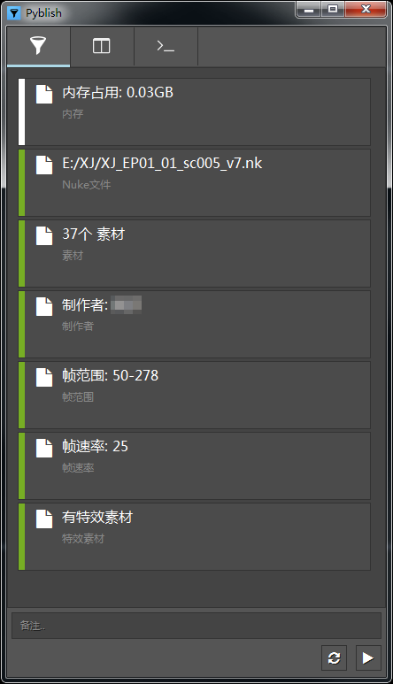
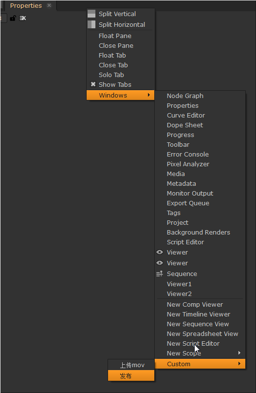

发布¶
工作流程上使用 Pyblish 发布框架
发布分为4个阶段进行: 收集 -> 检查 -> 提取 -> 集成
界面¶

界面分为三个标签页: 概览, 详细, 日志, 在顶部可以切换
右下方随当前状态变化有最多4个按钮:
 : 重置当前阶段到
: 重置当前阶段到 收集前 : 执行, 完成
: 执行, 完成 检查阶段后停止- : 执行, 完成
发布阶段后停止 - : 终止当前操作
在初始状态下发布面板使用浮动窗口, 但也可以手动设置固定位置并保存在工作区中

在Nuke面板空白处选择 Windows - Custom - 发布 即可创建固定面板
然后使用Nuke菜单 -
Workspace - Save Workspace... 即可保存工作区